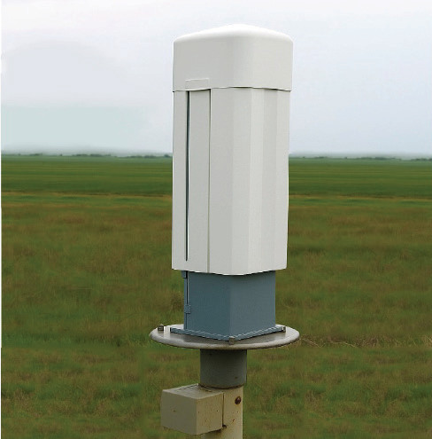
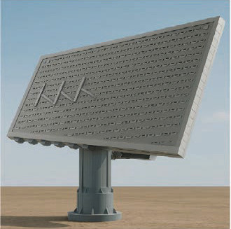

Ili kupima urefu wa mawingu wataalamu hutumia kifaa maalumu kinachoitwa Seilometa. Vilevile; mawingu hupimwa kwa kutumia Rada za hali ya hewa na Satelaiti. Soma maelezo ya Kielelezo namba 11 (a) na (b). Kujua urefu wa mawingu ni muhimu kwa utabiri wa hali ya hewa na kwa marubani wanaopitia anga lenye mawingu.

(a) Seilometa

(b) Rada
Kielelezo namba 11: Vifaa vinavyotumika kupima urefu wa mawingu
Aidha, mwelekeo, kasi na aina ya mawingu huweza kupimwa kwa kifaa maalumu kiitwacho Kiyombo cha mawingu (Nephoscope) kama kinavyowasilishwa katika Kielelezo namba 12. Kifaa hiki husaidia wataalamu wa hali ya hewa kujua mienendo ya mawingu. Kwa kawaida hutumika pamoja na vifaa vingine kama darubini ya hali ya hewa au kamera za angani.

Kielelezo namba 12: Kiyombo cha mawingu